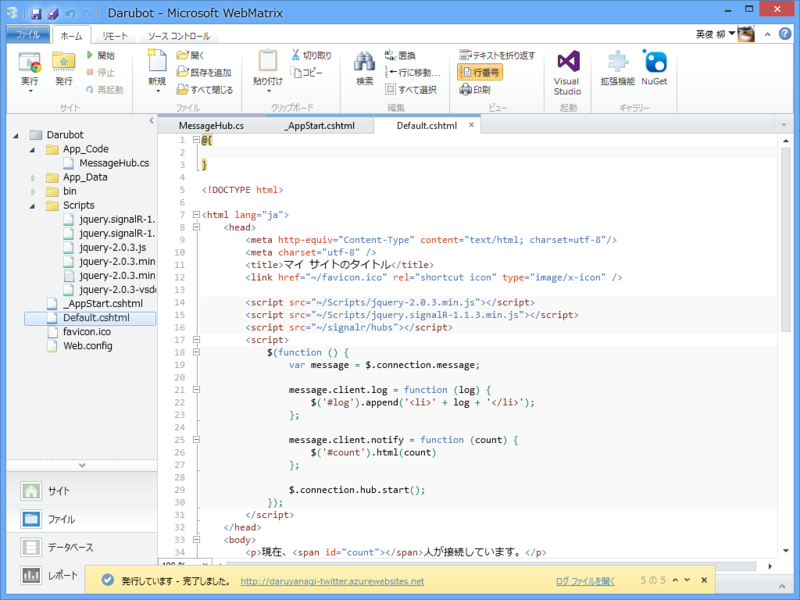
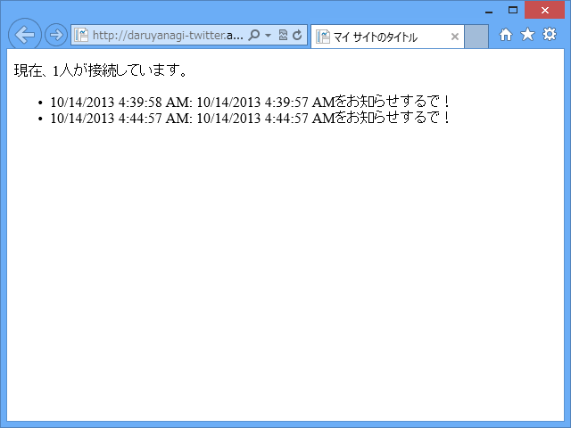
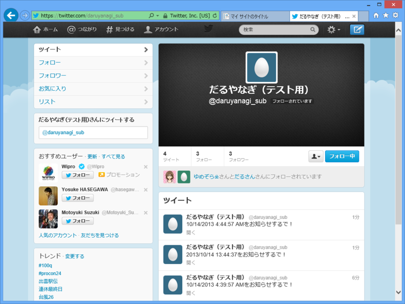

WebMatrix 3: Twitter Bot （＋リアルタイムログ表示付き）でも作ってみる。
公開日：

タイマーと WebMatrix 3: Twitter ライブラリ Tweetinvi API でツイートしてみる - だるろぐ を組み合わせれば、定期的に何かをつぶやく BOT も手軽に作れそうな予感。
タイマー
.NET Framework にはいろんなタイマーがある（http://www.atmarkit.co.jp/fdotnet/dotnettips/374timerstimer/timerstimer.html）。
- System.Windows.Forms.Timer（Windows Form のタイマーコントロール）
- System.Threading.Time（軽量なマルチスレッドタイマー？）
- System.Timers.Timer（サーバサイド・アプリケーションでの利用を想定したタイマー）
ほかにも ASP.NET にはこんなのもある。
- System.Web.UI.Timer（Web Form のタイマーコントロール）
今回は多分 System.Timers.Timer を使うべきなのだと思うので、using Timer = System.Timers.Timer にしておく。
Twitter クライアント
Tweetinvi API を利用する。権限の変更（Write の付加とトークンの再生成）を忘れずに。自分は忘れてて、だいぶ時間を無駄にした。
アプリのセットアップだのといった手順は省く。
SignalR
タイマーや Twitter クライアントがちゃんと動いているのか確かめるために、SignalR でログをブロードキャストしてみた。ブラウザーでサイトを開いておけば、リアルタイムでログが表示される。
前に書いたコードをほとんど流用。
コード
~/App_Code/MessageHub.cs
SingalR のハブを記述。
using Microsoft.AspNet.SignalR; using Microsoft.AspNet.SignalR.Hubs; using System.Collections.Concurrent; using System.Threading.Tasks;[HubName("message")] public class MessageHub : Hub { private static readonly ConcurrentDictionary<string, bool> _connections = new ConcurrentDictionary<string, bool>();
public override Task OnConnected() { _connections.TryAdd(Context.ConnectionId, true);
return Clients.All.notify(_connections.Count); }
public override Task OnDisconnected() { bool value;
_connections.TryRemove(Context.ConnectionId, out value);
return Clients.All.notify(_connections.Count); }
public override Task OnReconnected() { _connections.TryAdd(Context.ConnectionId, true);
return Clients.All.notify(_connections.Count); } }
なぜか同時接続数もカウントするようになっている（コピペのついでだ！）が、この処理が要らないのであればクラスの中身は空っぽでもいい。
~/_AppStart.cshtml
このコードはアプリケーションの開始時に実行される。
@using System.Web.Routing @using Microsoft.AspNet.SignalR @using Timer = System.Timers.Timer@{ RouteTable.Routes.MapHubs();
var interval = 1000 * 60 * 5;
var timer = new Timer(interval);
var token = new TwitterToken.Token(/* 秘密♪ */);
timer.Elapsed += (sender, args) => { var context = GlobalHost.ConnectionManager .GetHubContext<MessageHub>();
try { var tweet = new Tweetinvi.Tweet( DateTime.Now.ToString() + "をお知らせするで！"); tweet.Publish(token);
context.Clients.All.log( string.Format("{0}: {1}", DateTime.Now, tweet.Text)); } catch (Exception e) { context.Clients.All.log( string.Format("{0}: {1}", DateTime.Now, e.Message)); } };
timer.Start(); }
やっていることは、
- ハブのマッピング（自動生成された JavaScript が ~/signalr/hubs にマッピングされる）
- Twitter のアクセストークン生成
- タイマーの準備
の3つだけ。
タイマーイベントでは GlobalHost.ConnectionManager.GetHubContex でハブが取得できるので、これを利用してすべてのクライアントにログをブロードキャスト（context.Clients.All.log）している。
~/Default.cshtml
SignalR のハブから受け取った情報をレンダリング。log 関数と notify 関数を定義しておいて、サーバーから呼べるようにしている。
@{
}
<!DOCTYPE html>
<html lang="ja">
<head>
<meta http-equiv="Content-Type" content="text/html; charset=utf-8"/>
<meta charset="utf-8" />
<title>マイ サイトのタイトル</title>
<link href="~/favicon.ico" rel="shortcut icon" type="image/x-icon" />
<script src="~/Scripts/jquery-2.0.3.min.js"></script>
<script src="~/Scripts/jquery.signalR-1.1.3.min.js"></script>
<script src="~/signalr/hubs"></script>
<script>
$(function () {
var message = $.connection.message;
message.client.log = function (log) {
$(’#log').append(’<li>‘ + log + ’</li>‘);
};
message.client.notify = function (count) {
$(’#count').html(count)
};
$.connection.hub.start();
});
</script>
</head>
<body>
<p>現在、<span id="count"></span>人が接続しています。</p>
<ul id="log">
</ul>
</body>
</html>
結果

ブラウザーにはログが表示される。

Twitter には時報（Azure においた奴と、ローカルで動いている奴の二つ）がポストされる……けれど、Azure のほうはサーバーの時差を考えていなかったので、時間が狂ってる。まぁ、ここは適当にあとで手直ししよう。
WebMatrix だったらデータベース（SQL CE）との連携も簡単なので、データベースにストアしたテキストを定期的に吐く、なんてのは割と簡単なはず。Tweetinvi はユーザーストリームに対応するので、もしかしたらリアルタイムな応答も割と簡単に書けるのかもしれない。
おまけ
怖い ((((；ﾟДﾟ)))ｻﾞｸｸﾞﾌｹﾞﾙｸﾞｸﾞ
のいえっちのブログ読んだけど、自分のやり方はなんかいろいろ穴があるっぽく思えてきた。